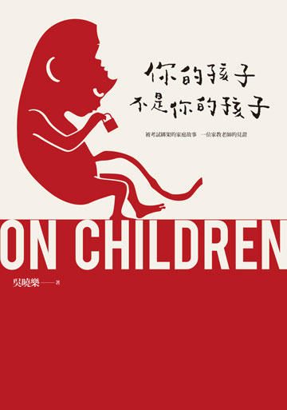
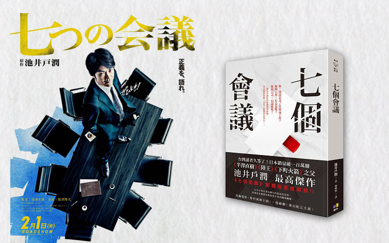
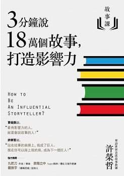
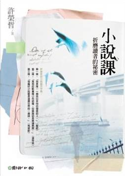
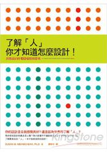
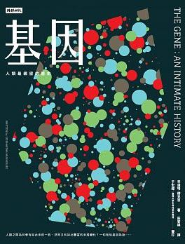

圖書館
整合行銷部
整合行銷部
館藏 (165)
抽靈籤卜聖卦
遷移啟示
 呂錦棠
呂錦棠
- 世界冠軍紙飛機
- 決斷的演算─預測、分析與好決定的11堂邏輯課
- 地圖大歷史：探索世界上最具時代意義的偉大地圖
- 便利店人間
- 2018 台北米其林指南 Taipei：The MICHELIN
- 拚死也要去的世界絕景
- 1945 零年─現代世界的夢想與夢碎之路
- 心的經典─心經新釋
- 這樣裝潢，不後悔
 曾芷儀
曾芷儀
- 正向教養
- 愛是一切的答案
- 靈魂之旅
- 心靈雞湯
- 被討厭的勇氣二部曲完結篇
- 你值得過更好的生活
- 開啟高敏感孩子天賦
- 孩子，先別急著吃棉花糖
- 有錢人想的和你不一樣
- 為什麼你不敢面對真實的自己
- 練習，喜歡自己
- 秘密
曾芷儀(續)
- 零極限：創造健康、平靜與財富的夏威夷療法
- Hero：活出你內在的英雄
- 向宇宙下訂單
- 想像5年後的你
- 失落的致富經典
- 斜槓青年
- 時間的陷阱
- 覺醒的你
- 小王子
- 富爸爸，窮爸爸
許瑞宏
- 惡意
- 解憂雜貨店
- 寫作革命：散文、小說、文案、社群貼文輕鬆進階的 40 道練習題
- 穿裙子的男孩
- 惡血
- 基因 (Oct. 4, 2018)
- 因為愛，我們呼吸 (Oct. 18, 2018)
- 了解「人」，你才知道怎麼設計！ (Jan. 10, 2019)
- 深夜小狗神祕習題 (Jan. 31, 2019)
- 小說課 I ─ 折磨讀者的祕密 (Apr. 18, 2019)
- 小說課 II ─ 偷故事的人 (Apr. 18, 2019)
- 小說課 III ─ 偷電影的故事賊 (Apr. 18, 2019)
- 餘震 (Jun. 6, 2019)
- 這就是我來到這世界的理由
- 你的孩子不是你的孩子
許瑞宏(續 1)
- 故事1：3分鐘說18萬個故事，打造影響力
- 故事2：99%有效的故事行銷，創造品牌力 (Sep. 12, 2019)
- 當最後一個音符輕柔落下
- 不當行為 (Nov. 7, 2019)
- 七個會議
- 童話裡隱藏的世界史 (Apr. 16, 2020)
- 新參者
- 親愛的臥底經濟學家
- 禁忌的魔術
- 在天堂遇見的五個人
- 在天堂遇見的下一個人
- CSS 大全 (Jun. 18, 2020)
- 故事行銷
- 牧羊人讀書筆記
- 萬病之王 (Sep. 10, 2020)
許瑞宏(續 2)
許瑞宏(續 3)
保險業的無接觸服務

99% 有效的故事行銷，創造品牌力
許榮哲
99% 有效的故事行銷，創造品牌力
- 飢荒、戰爭下，小麥當主食不夠吃
- 推廣馬鈴薯當主食
- 三好：營養高、產量豐富、容易種植
- 俄國彼得大帝、法國路易十六相繼失敗
- 三壞：鬼影幢幢、染毒陰影、聖經沒說
- 腓特列大帝的馬鈴薯
- 定為「皇家蔬菜」，皇親國戚才能吃
- 國王才能種，老百姓不准種
童話裡隱藏的世界史
朴信英
CSS 大全
Eric A. Meyer & Estelle Weyl
<html>
<head>
<link rel="stylesheet" href="css/reveal.css">
<link rel="stylesheet" href="css/theme/black.css" id="theme">
<style type="text/css">
.parent{
position:absolute;
}
.left{
position: relative;
float: left;
height: 350px;
width: 750px;
}
.right{
position: relative;
float: right;
height: 350px;
width: 180px;
}
</style>
</head>
<body>
<div class="parent">
<div class="left">
左側內容
</div>
<div class="right">
<img class="upx" src="others/egg/2020/css.png" height="220px">
<a href="others/egg/2020/typecss.html" target="_blank">
<i class="far fa-hand-point-up" style="color:#F08080"></i>
</a>
</div>
</div>
</body>
</html>
<html>
<head>
<link rel="stylesheet" href="css/reveal.css">
<link rel="stylesheet" href="css/theme/black.css" id="theme">
<style type="text/css">
.parent{
position:absolute;
}
.left{
position: relative;
float: left;
height: 350px;
width: 750px;
}
.right{
position: relative;
float: right;
height: 350px;
width: 180px;
}
</style>
</head>
<body>
<div class="parent">
<div class="left">
左側內容
</div>
<div class="right">
<img class="upx" src="others/egg/2020/css.png" height="220px">
<a href="others/egg/2020/typecss.html" target="_blank">
<i class="far fa-hand-point-up" style="color:#F08080"></i>
</a>
</div>
</div>
</body>
</html>
不當行為
理查‧塞勒

你的孩子不是你的孩子
吳曉樂
- 把孩子帶來人世間的男女自然能勝任父母的角色 , 這實在是很天真的幻想。
- 每一個小孩，有其存在的獨特性。有太多父母執意要小孩去臨摹其他人的行為，複製類似的成功經驗，去追求他們眼中的理想人生，圓滿他們年輕時未竟的夢，甚至是驅策小孩成為「第二個自己」。
就小孩立場來說，「為了達成某個目的，自己才被生下來」，也是很可悲的一件事。 - 妳若執意給她做決定， 這在某種程度上也是一種溺愛。
- 這些故事之所以存在，是期待我們去凝視一個初衷，靜下來，好好想想，把小孩帶到這世界上的初衷。
曾經，我們光是觸摸小孩柔軟的掌心就滿足不已。

新參者
東野圭吾
七個會議
池井戶潤
3 分鐘說 18 萬個故事，打造影響力
許榮哲
- 「我我我在你老婆床上等等等...... 火車經過。」
- 史上第二厲害的故事類型
- 賽局理論
- 第十三封情書： $r=a(1-\sin\theta)$
- 史上最厲害的故事
- 賽局理論的故事再發展

當最後一個音符輕柔落下
莎莉‧潔諾娃

餘震 (唐山大地震)
張翎 (馮小剛)

小說課 I ─ 折磨讀者的祕密
許榮哲
- 馬奎斯說的極好，每篇好小說都是這個世界上的一個謎。有了謎，就帶來了折磨。
- 此處的場景和一開始的場景幾乎一模一樣，但讀者這時的心情已經和當初看到這個場景時的心情完全不一樣了，...
- 人物的性格決定了人物的命運，而不是小說家決定了人物的命運。
- 有一種說法是這樣，當小說寫到三分之一處時，小說就會脫離作家的手，自己接力寫下去。
- 所以請記得創作 (或虛構) 小說的你，擁有至高無上的訂定規則權力，千萬別被現實這個可怕的敵人牽著鼻子走，

小說課 II ─ 偷故事的人
許榮哲
小說課 III ─ 偷電影的故事賊
許榮哲
隧道
- 隧道非常具有象徵性，入口與出口之間，隔著不知道多久才會結束的黑暗。
- 隧道裡， 一片全然的黑，最無助的人物走在最無助的空間裡，沒有人知道前方等著他們的是什麼。
屍速列車的結局應該停在哪裡？
- 三人新世界 (75%)
- 悲劇英雄 (80%)
- 開放隧道 (85%)
- 貫穿頭尾的伏筆 (原劇)
- 角色性格的伏筆 (性格)
- 重複的禮物 ...
深夜小狗神祕習題
馬克‧海登
- 三門問題 (蒙特霍問題、蒙提霍爾悖論) 假設你正在參加一個遊戲節目，你被要求在三扇門中選擇一扇：其中一扇後面有一輛車；其餘兩扇後面則是山羊。你選擇了一道門，假設是一號門，然後知道門後面有什麼的主持人，開啟了另一扇後面有山羊的門，假設是三號門。他然後問你：「你想選擇二號門嗎？」
- 瑪麗蓮·沃斯·莎凡特 在1980年代中期因躋身《金氏世界紀錄》中的智商紀錄保持人而成名（結果為228）。當時她的答覆在《大觀雜誌》刊出之後引起舉世關注。她的解答徹底違反直覺，並引起眾多數學家的質疑。但隨後的闡釋讓質疑者顏面無光。
了解人你才知道怎麼設計
- 你的腦部不斷在解釋你眼睛看到的所有事物。

基因：人類最親密的歷史
辛達塔‧穆克吉 (The Gene)
- 你的爹娘，把你搞得
一蹋糊塗 。
他們未必有心如此，卻依舊這麼做了。他們把自己的缺點，一股腦兒塞給你，還特別為你，附贈更多。 - 疾病不是絕對的殘疾，而是基因型和環境之間的不一致。
- 女性的隱私權「範圍足以涵蓋她是否決定終止懷孕」。
- 法官認為「在可以合理確定孩子會畸形時，準父母有權選擇不要生孩子。」
- 法庭認為孩子擁有天生不帶有遺傳異常的權利，這是一種基本的權利。
- 人類史上舉世最大的「消極優生學」計畫，並不是 1930 年代在納粹德國或奧地利有系統地處決猶太人，這項恐怖的殊榮落在印度和中國，在這兩個國家，...

因為愛，我們呼吸
莉莎‧潔諾娃 (Inside the O'Briens)
亨丁頓舞蹈症
- 他伸進前口袋，拿出零錢。他找出四個二十五分硬幣...。每個孩子都有百分之五十的機率。
- 至今，有超過百分之九十可能患有 HD 的人選擇保持未知。
- 寶寶一出生，就只有她自己才能決定要不要知道自己基因，而最早的檢驗法定年齡是十八歲。
- 自 1993 年起知道造成 HD 的單一因素是基因突變，但至今仍無有效預防或減緩病程的療法。
- 他伸進前口袋，拿出零錢。他找出四個二十五分硬幣...。每個孩子都有百分之五十的機率。
- 至今，有超過百分之九十可能患有 HD 的人選擇保持未知。
- 寶寶一出生，就只有她自己才能決定要不要知道自己基因，而最早的檢驗法定年齡是十八歲。
- 自 1993 年起知道造成 HD 的單一因素是基因突變，但至今仍無有效預防或減緩病程的療法。
這就是我來到這世界的理由
莉莎‧潔諾娃 (Love Anthony)
自閉症
- 自閉症患者只是和別人不同，而不是不如人。
- 討厭碰觸、不與人有眼神接觸，但還是有想法，同每個人一樣，他有他喜歡的邏輯，與思考模式。
- 高鐵上尖叫
- 永遠如此規則
- 情狀規則
- 我來到這個世界只有一個簡單的目的，而自閉症就是我的工具
- 自閉症患者只是和別人不同，而不是不如人。
- 討厭碰觸、不與人有眼神接觸，但還是有想法，同每個人一樣，他有他喜歡的邏輯，與思考模式。
- 高鐵上尖叫
- 永遠如此規則
- 情狀規則
- 我來到這個世界只有一個簡單的目的，而自閉症就是我的工具
 楊慎淇
楊慎淇
- 第一次油漆就上手
- 雪球：巴菲特傳
- 五代中醫救命之方
- The Science of Success
- Good Profit
- 馬雲管理日志
- 屋主都說讚的居家好設計350+
- 薑黃的秘密
- 電子商務─新商業革命
- 如何從台股賺一億
- 專案管理聖經
- 神奇的肝膽排石法
- 行銷思想
- 牛奶可樂經濟學
- 幸福退休新時代
- 只買 4 支股，年賺18%
 林芝萱
林芝萱
- 這樣 ○ 那樣 X 馬上學好設計
- 工作，剛剛好就好
- 設計心理學
- 斜槓青年
- 被討厭的勇氣
- 打動人心的產品設計
- 一擊奏效的社群行銷術
- 敏捷與 Scrum 軟體開發速成
- 願你的深情，能被溫柔以待
- 刻意練習：原創者全面解析，比天賦更關鍵的學習法
- 如果可以簡單，誰想要複雜
- 你的孩子不是你的孩子
 林昱宏
林昱宏
- 橡皮擦計畫
- 動物農莊
- 動物農莊求生計：一場「實現改革創新」的 MBA 經典故事
- 四騎士主宰的未來：解析地表最強四巨頭 Amazon、Apple、Facebook、Google 的兆演算法
- 好策略‧壞策略：第一本讓歐洲首席經濟學家欲罷不能、愛不釋手的策略書
- 貝佐斯傳：從電商之王到物聯網中樞，亞馬遜成功的關鍵
- 我絕非虛構的美好七年
- 為什麼 Google、LinkedIn、波音、高通、迪士尼都找他合作？
- 窮查理的普通常識
- 大破壞
- 兩年八個月又二十八夜
- 創意天才的蝴蝶思考術
 洪筱婷
洪筱婷
- 在咖啡冷掉之前
- 世界太 boring 我們需要文藝復興
- 不懂神話就只能看裸體了啊
- 台灣史上最有梗的台灣史
- 藝術家的一日廚房:學校沒教的藝術史
- 我在外交部工作
- 手繪台灣人400年史
- 台北城市散步
- 巴黎地鐵站的歷史課
- 寫給年輕人的古典音樂小史
- 維梅爾的帽子：揭開十七世紀全球貿易的序幕
- 看圖賞味葡萄酒圖鑑
 詹宛霖
詹宛霖
-
1) 未來年表 - 河合雅司 著
2) 2025無齡時代：迎接你我的超高齡社會 - 陳亮恭 著
3) 無毒好生活 - 譚敦慈 著
4) 別再錯用你的腦 - 樺澤紫苑 著
5) Marketing 4.0 - Philip Kotler
6) 像芬蘭這樣教 - Timothy D. Walker
7) 讓天賦自由 - Ken Robinson
8) ...
 黃薇
黃薇
- 精準用腦
- 原子習慣
- 二十一世紀生死課
- 閒暇與無聊
- 變老的勇氣
- 不斷幸福論
- 怪奇事物所:你知道嗎?其實我們都很怪!
 許智超
許智超
他說不要靜態，所以我讓他一直搖...
附錄
鄭陳澤
- 錢買不到的東西
- 失控的同理心
- 外商顧問超強資料製作術
- 刻意練習
- 好人總是自以為是
- 為什麼我們需要公共哲學
- 隱藏人格們的旅行清單
- 網路連鎖效應
- 縮時社會
- 斜槓青年
- 被討厭的勇氣
- 光榮城市
許立緯
- 待辦事項這樣列工作當場完成一半
- High Performance Habits
- 與成功有約：高效能人士的七個習慣
- 刻意練習：原創者全面解析，比天賦更關鍵的學習法
- 為什麼這樣工作會快、準、好：全球瘋行的工作效率升級方案，讓你的生活不再辛苦，工作更加省時省力
- 為什麼我們這樣生活，那樣工作?
- 這輩子，只能這樣嗎?你是自己最大的敵人
- 峰與谷：超越逆境、享受順境的人生禮物
- 周一清晨的領導課
- 先別急著吃棉花糖
- 成功從聚焦一件事開始
- 想成功，先吃了那隻青蛙：博恩 ‧ 崔西提升個人效力21個技巧
- 原來有錢人都這麼做：效法有錢人的理財術，學習富人的致富之道
- Mindset: The New Psychology of Success
- Deep Work: Rules for Focused Success in a Distracted World
黃于庭
- 翻身準則
- 腦科學時間術
- 菜鳥變成問題解決高手
- 魔球
- 簡報的藝術
- 向上管理
- 師父
- 橡皮擦計畫
- ETF煉金術
- 五線譜投資術
- 這些憑什麼爆紅
- 斜槓青年
劉慧伶
林祐任
- 從東南亞到東協：存異求同的五百年東南亞史
- 馬雲：未來已來
- A Splendid Exchange: How Trade Shaped the World
- Factfulness: Ten Reasons We’re Wrong About the World - and Why Things Are Better Than You Think
- 華頓商學院最受歡迎的談判課:上完這堂課，世界都會聽你的
- 第五項修練：學習型組織的藝術與實務
- 智慧型股票投資人
- 資本的世界史：財富哪裡來?經濟成長、貨幣與危機的歷史
- 複雜問題的策略思考 & 分析
- 商業冒險：華爾街的 12 個經典故事
- 最后一公里的哲學：電商物流全鏈條運營管理
- 手機消費革命：行動化時代影響消費者決策的九種力量
林祐任(續)
- 刻意練習：原創者全面解析，比天賦更關鍵的學習法
- 美國的反智傳統：宗教、民主、商業與教育如何形塑美國人對知識的態度？
- Thinking, Fast and Slow
- 重新想像印度：亞洲下一個超級強國的潛力解碼
- 中東心臟：沙烏地阿拉伯的人民、宗教，歷史與未來
- 橫渡孟加拉灣：浪濤上流轉的移民與財富，南亞‧東南亞五百年史
- 能源大騙局：綠能神話引燃的世紀豪賭
- 基因：人類最親密的歷史
- 萬病之王：一部癌症的傳記，以及我們與它搏鬥的故事
- 你從哪裡來？一個字聽出你的故鄉─為什麼要懂語言學
- 漢字日本：日本人說的和你想的不一樣，學習不勉強的日文漢字豆知識
- 原則：生活和工作
張峻銘
鄭晏羽
- 最後14堂星期二的課
- 丟掉你的爛劇本
- 斜槓青年
- Color for Designer
- 你的善良必須有點鋒芒
- 高手思維
張婷雅
- 6 分鐘日記的魔法
- 被討厭的勇氣
- 不要在該奮鬥時選擇安逸
- 如何在 LINE、FB 寫出爆款文案
- 原則：生活和工作
林辰
部內行政
- 全部 (含兼職)： 錦棠、 瑞宏、 芷儀、 慎淇、 昱宏、 筱婷、 芝萱、 宛霖、薇、 莉婷、 智超、 澤
- 全部 (不含兼職)： 錦棠、 瑞宏、 芷儀、 慎淇、 昱宏、 筱婷、 芝萱、 宛霖、 薇、 莉婷
- 周報： 錦棠、 瑞宏、 芷儀、 慎淇、 昱宏、 筱婷、 芝萱、 宛霖、 薇、 智超、 澤
西瓜皮通訊錄
| 姓名 | 電話 | 分機 |
|---|---|---|
| 林辰 | 2737-1122 | #444 |
| 張峻銘 | 2737-1122 | #555 |
| 張婷雅 | 2737-1122 | #889 |
| 鄭晏羽 | 2737-1122 | #887 |
體溫紀錄
| # | 4/6 | 4/7 | 4/8 | 4/9 | 4/10 | 4/13 | 4/14 | egg | 36.4 | 36.5 | 36.5 | 36.7 | 36.6 | 36.6 | 36.4 |
|---|